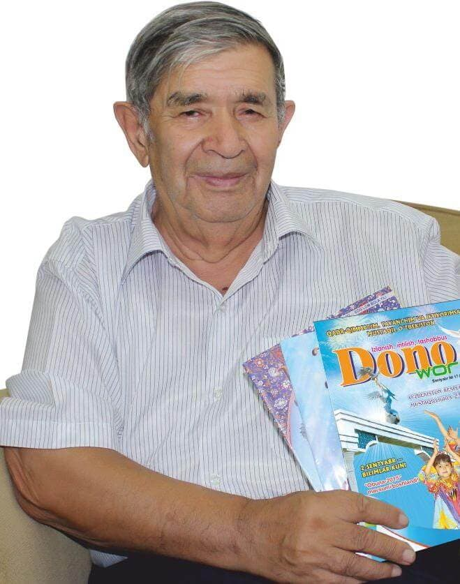

Xudoyberdi To'xtaboyev

Tarjimai hol
Xudoyberdi To‘xtaboyev - o‘zbek adabiyotining zamonaviy bolalar yozuvchisi. O‘zbekiston Respublikasida xizmat ko‘rsatgan madaniyat xodimi, O‘zbekiston xalq yozuvchisi.
Xudoyberdi To‘xtaboyev 1932 yil 17 dekabr kuni Farg‘ona viloyatining Katta Tag‘ob tumanida dunyoga kelgan. Xudoyberdi erta yetim qolib, bobosi va buvisining qo‘lida tarbiyalanadi.
1949 yil Qo‘qon pedagogika institutini, 1955 yil Toshkent Davlat universitetini (hozirgi O‘zbekiston Milliy universitetini) tamomlaydi.
Ijodiy faoliyatini Farg‘ona viloyatidagi maktabda dars berishdan boshlagan, keyinroq o‘quv ishlari mudiri va maktab direktori lavozimlarida ishlaydi.
1958 yildan Xudoyberdi To‘xtaboyev keyingi 14 yil mobaynida “Toshkent oqshomi”, “Sovet O‘zbekistoni” gazetalarida 300 dan ortiq feletonlarini chop etadi. Shuningdek, “Guliston”, “Sharq yulduzi”, “Gulxan”, “G‘uncha”, “Yosh kuch” jurnallarida, “Yosh gvardiya” va “Kamalak” bosma nashrlarida ijod namunalari bilan ishtirok etadi.
1958 yil qisqa vaqt mobaynida “Yosh gvardiya”, “Sir fosh etildi”, “Sehrli qalpoqa” kabi kitoblari omma e’tiboriga havola qilindi.
Keyingroq “Omonboy va Davronboy”, “Sariq devni minib”, “Yillar va yo‘llar”, “Besh bolali yigitcha”, “Qasoskorning oltin boshi”, “Sehrgarlar jangi yoki shirin qovunlar mamlakatida”, “Jannati odamlar” kabi kitoblari chop etiladi.
Xorijiy kitobxonlar orasida Xudoyberdi To‘xtaboyev “Sehrli qalpoqcha” ertak-qissasining rus tiliga tarjimasi (shuningdek, ukrain, fransuzs va bir qator boshqa tillar) bilan tanilgan.
“Sehrli qalpoqcha” ertak-qissasi - yozuvchining rus tiliga tarjima qilingan birinchi kitobi. Mazkur asar kitobxonga olam quvonch va xursandchilik onlarini had’ya qiladi, degan umiddamiz.